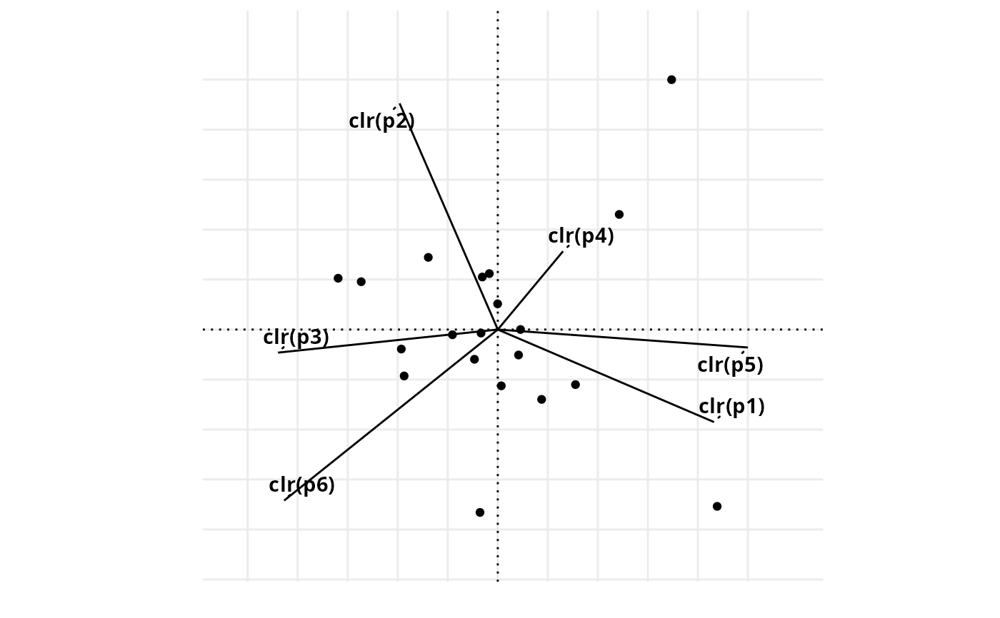
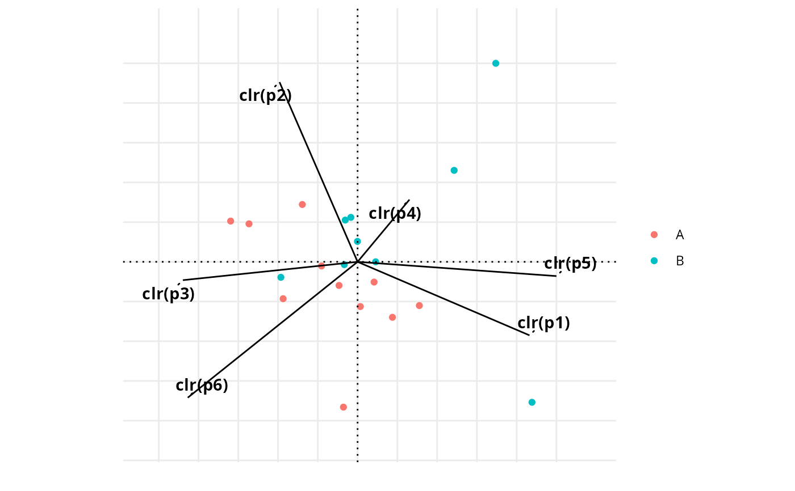
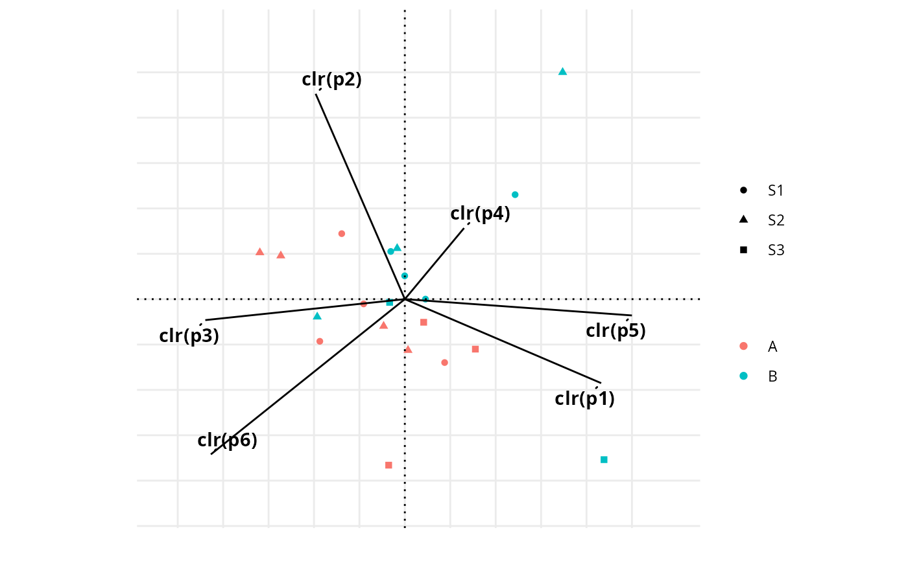
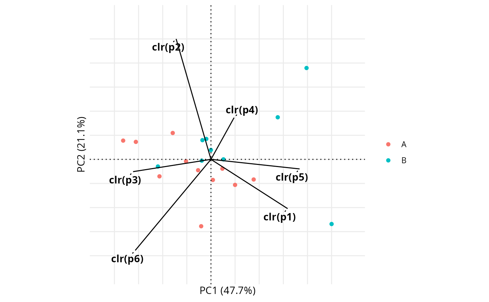
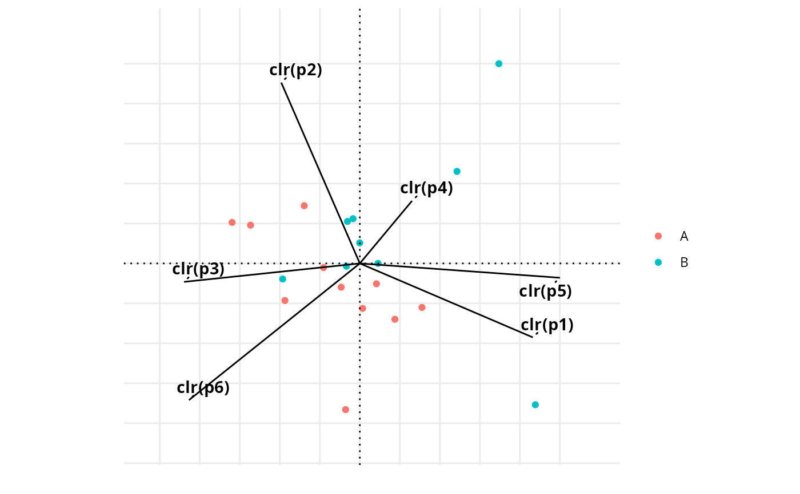

Generates a centered log-ratio (CLR) biplot for compositional data.
Usage
clr_biplot(
X,
group = NULL,
biplot_type = "covariance",
alpha = NULL,
shape_group = NULL,
return_data = FALSE,
repel = TRUE,
repel_force = 1,
repel_max_overlaps = Inf
)Arguments
- X
A matrix or data frame containing compositional data (strictly positive).
- group
Optional factor/character used to color the observations.
- biplot_type
Character string specifying the type of biplot. Either
"covariance"(default) or"form".- alpha
Optional numeric in [0,1]. If provided, overrides
biplot_type.alpha = 0: covariance biplotalpha = 1: form biplot
- shape_group
Optional factor/character used to assign shapes to observations.
- return_data
Logical. If TRUE, returns a list with data frames for observations, variables, and the ggplot object.
- repel
Logical. If TRUE (default), use ggrepel for variable labels when available.
- repel_force
Numeric. Repulsion force passed to
ggrepel::geom_text_repel().- repel_max_overlaps
Numeric. Maximum overlaps allowed (ggrepel).
Examples
# Basic example (no groups)
set.seed(1)
X <- matrix(runif(120, 0.1, 10), ncol = 6)
colnames(X) <- paste0("p", 1:6)
clr_biplot(X)
#> Ignoring unknown labels:
#> • colour : ""
#> • shape : ""

# Grouped example (color)
grp <- factor(sample(c("A", "B"), nrow(X), replace = TRUE))
clr_biplot(X, group = grp)
#> Ignoring unknown labels:
#> • shape : ""

# Color + shape
shp <- factor(sample(c("S1", "S2", "S3"), nrow(X), replace = TRUE))
clr_biplot(X, group = grp, shape_group = shp)

# Form biplot (alpha = 1) with repelled variable labels (requires ggrepel)
clr_biplot(X, group = grp, biplot_type = "form", repel = TRUE)
#> Ignoring unknown labels:
#> • shape : ""

# Covariance biplot (alpha = 0) and custom repel settings
clr_biplot(X, group = grp, alpha = 0, repel = TRUE, repel_force = 1.5, repel_max_overlaps = 30)
#> Ignoring unknown labels:
#> • shape : ""
